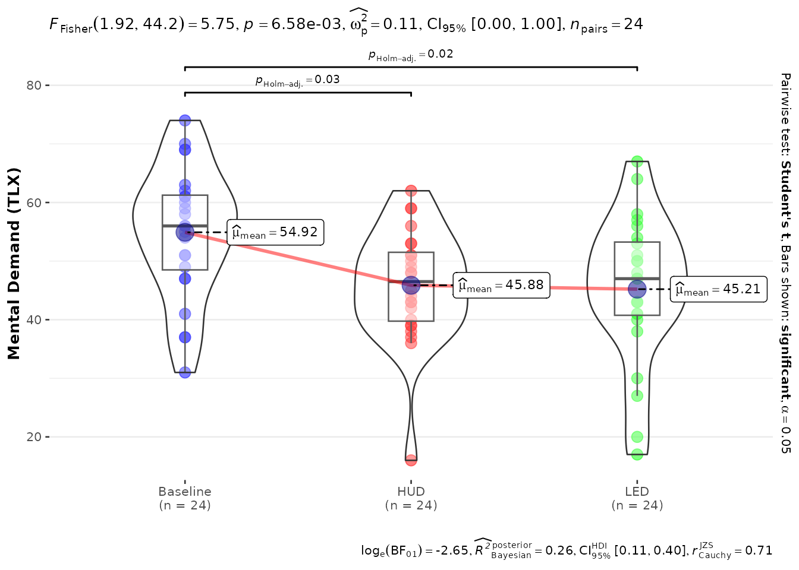
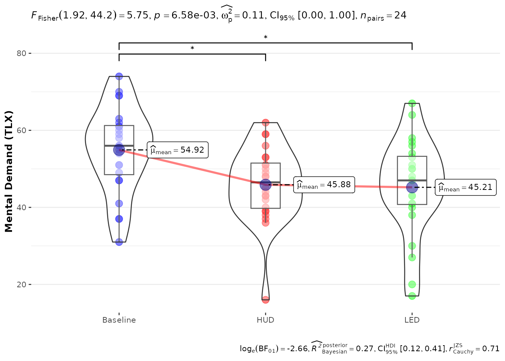

Analyzing a typical user study
Source:vignettes/analyzing-a-user-study.Rmd
analyzing-a-user-study.Rmd
library(colleyRstats)
#> Loading required package: ggplot2
#> Registered S3 methods overwritten by 'ggpp':
#> method from
#> heightDetails.titleGrob ggplot2
#> widthDetails.titleGrob ggplot2This vignette walks through the workflow colleyRstats
was built for: a within-subjects user study, from raw data to the text
and figures that go into the manuscript. Every number in the paper
should come out of this script – no retyping, no copy-paste drift.
The study data
Twenty-four participants experienced three interface conditions and rated their mental demand (0–100, NASA-TLX style) and trust (1–7 Likert) after each. In your project this data frame comes from your logging or survey export; here we simulate it.
set.seed(42)
n <- 24
main_df <- data.frame(
Participant = factor(rep(seq_len(n), each = 3)),
ConditionID = factor(rep(c("Baseline", "HUD", "LED"), times = n))
)
cond_effect <- c(Baseline = 55, HUD = 46, LED = 44)[as.character(main_df$ConditionID)]
main_df$tlx_mental <- pmin(100, pmax(0, round(cond_effect + rnorm(nrow(main_df), sd = 10))))
main_df$trust <- pmin(7, pmax(1, round(3.5 +
(main_df$ConditionID != "Baseline") * 0.9 + rnorm(nrow(main_df), sd = 1))))Two things matter before any analysis:
- the participant and condition columns must be factors (they are above);
- decide up front whether the design is within- or between-subjects – it changes the tests, the plots, and the effect sizes.
The quick route: one call per dependent variable
analyze_and_report() runs the whole per-DV pipeline: it
checks the assumptions (and phrases the justification for the methods
section), builds the matching ggstatsplot figure with
automatic parametric/non-parametric selection, reports the omnibus test,
and – for three or more groups – the significant post-hoc
comparisons.
res <- analyze_and_report(
main_df,
dv = "tlx_mental", iv = "ConditionID",
design = "within",
ylab = "Mental Demand (TLX)"
)
#> Shapiro--Wilk tests indicated no significant deviation from normality in any group (all $p \geq 0.05$); therefore, parametric tests were used.
#> An ANOVA estimation for factorial designs using 'afex' found a significant effect of \ConditionID on tlx\_mental (\F{1.92}{44.2}{5.75}, \p{0.007}, $\omega_{p}^{2}$ = 0.11).
#> A Student's t post-hoc test (Holm-adjusted) found that Baseline was significantly higher (\m{54.92}, \sd{11.10}) in terms of tlx\_mental compared to HUD (\m{45.88}, \sd{9.76}; \padj{0.033}).
#> A Student's t post-hoc test (Holm-adjusted) found that Baseline was significantly higher (\m{54.92}, \sd{11.10}) in terms of tlx\_mental compared to LED (\m{45.21}, \sd{12.51}; \padj{0.015}).The result carries everything separately, so you can place the pieces where they belong:
res$plot
res$methods # for the Methods section
#> [1] "Shapiro--Wilk tests indicated no significant deviation from normality in any group (all $p \\geq 0.05$); therefore, parametric tests were used."
res$text # the omnibus result
#> [1] "An ANOVA estimation for factorial designs using 'afex' found a significant effect of \\ConditionID on tlx\\_mental (\\F{1.92}{44.2}{5.75}, \\p{0.007}, $\\omega_{p}^{2}$ = 0.11). "
res$posthoc # significant pairwise comparisons (NULL for 2 groups)
#> [1] "A Student's t post-hoc test (Holm-adjusted) found that Baseline was significantly higher (\\m{54.92}, \\sd{11.10}) in terms of tlx\\_mental compared to HUD (\\m{45.88}, \\sd{9.76}; \\padj{0.033}). "
#> [2] "A Student's t post-hoc test (Holm-adjusted) found that Baseline was significantly higher (\\m{54.92}, \\sd{11.10}) in terms of tlx\\_mental compared to LED (\\m{45.21}, \\sd{12.51}; \\padj{0.015}). "For a whole questionnaire battery, report_all() does
this for every scale and adds a Holm-corrected summary across the
dependent variables:
battery <- report_all(
main_df,
dvs = c("tlx_mental", "trust"),
iv = "ConditionID",
design = "within",
labels = c(tlx_mental = "Mental Demand", trust = "Trust")
)
#> Shapiro--Wilk tests indicated no significant deviation from normality in any group (all $p \geq 0.05$); therefore, parametric tests were used.
#> An ANOVA estimation for factorial designs using 'afex' found a significant effect of \ConditionID on tlx\_mental (\F{1.92}{44.2}{5.75}, \p{0.007}, $\omega_{p}^{2}$ = 0.11).
#> A Student's t post-hoc test (Holm-adjusted) found that Baseline was significantly higher (\m{54.92}, \sd{11.10}) in terms of tlx\_mental compared to HUD (\m{45.88}, \sd{9.76}; \padj{0.033}).
#> A Student's t post-hoc test (Holm-adjusted) found that Baseline was significantly higher (\m{54.92}, \sd{11.10}) in terms of tlx\_mental compared to LED (\m{45.21}, \sd{12.51}; \padj{0.015}).
#> Shapiro--Wilk tests indicated a significant deviation from normality for at least one group (minimum $W = 0.79$, $p < 0.001$); therefore, non-parametric tests were used.
#> A Friedman rank sum test found a significant effect of \ConditionID on trust (\chisq(2)=10.93, \p{0.004}, $W_{Kendall}$ = 0.23).
#> A Durbin-Conover post-hoc test (Holm-adjusted) found that HUD was significantly higher (\m{4.12}, \sd{1.08}) in terms of \trust compared to Baseline (\m{3.42}, \sd{1.10}; \padj{0.024}).
#> A Durbin-Conover post-hoc test (Holm-adjusted) found that LED was significantly higher (\m{4.46}, \sd{0.78}) in terms of \trust compared to Baseline (\m{3.42}, \sd{1.10}; \padj{0.003}).
battery$summary
#> dv method statistic
#> 1 tlx_mental ANOVA estimation for factorial designs using 'afex' 5.754671
#> 2 trust Friedman rank sum test 10.929577
#> p.value p.holm
#> 1 0.006577594 0.008466471
#> 2 0.004233235 0.008466471Step by step, if you prefer control
1. Check the assumptions
check_normality_by_group(main_df, "ConditionID", "tlx_mental")
#> [1] TRUE
#> attr(,"tests")
#> ConditionID W p_value
#> 1 Baseline 0.9709072 0.6894229
#> 2 HUD 0.9310723 0.1030198
#> 3 LED 0.9589363 0.4174263assumption_methods_text() turns the same checks into the
sentence reviewers expect next to the choice of test:
assumption_methods_text(main_df, x = "ConditionID", y = "tlx_mental")
#> Shapiro--Wilk tests indicated no significant deviation from normality in any group (all $p \geq 0.05$); therefore, parametric tests were used.2. Plot with automatic test selection
The gg*WithPriorNormalityCheck* wrappers run the
normality check and pick the parametric or non-parametric variant for
you. The Asterisk versions annotate significant pairwise
comparisons with APA-style stars instead of p-values:
plot_within_stats_asterisk(
data = main_df,
x = "ConditionID", y = "tlx_mental",
ylab = "Mental Demand (TLX)",
xlabels = c("Baseline", "HUD", "LED")
)
#> Scale for x is already present.
#> Adding another scale for x, which will replace the existing scale.
(Every function also has a snake_case alias –
plot_within_stats_asterisk() is
ggwithinstatsWithPriorNormalityCheckAsterisk().)
3. Factorial designs: the Aligned Rank Transform
When there is more than one factor and normality is violated, the
standard non-parametric route is the Aligned Rank Transform (ARTool).
reportART() turns the ANOVA table into LaTeX sentences, and
reportArtCon() reports the pairwise contrasts with
rank-biserial effect sizes:
m <- ARTool::art(
tlx_mental ~ ConditionID + Error(Participant / ConditionID),
data = main_df
)
reportART(anova(m), dv = "mental demand")
#> The ART found a significant main effect of \ConditionID on mental demand (\F{2}{46}{5.56}, \p{0.007}, $\eta_{p}^{2}$ = 0.19, 95\% CI: [0.04, 1.00]).
ac <- ARTool::art.con(m, ~ ConditionID, adjust = "holm")
reportArtCon(
ac,
data = main_df, iv = "ConditionID", dv = "tlx_mental",
paired = TRUE, id = "Participant"
)
#> A post-hoc test found that tlx\_mental for the \ConditionID Baseline was significantly higher (\m{54.92}, \sd{11.10}) than for HUD (\m{45.88}, \sd{9.76}; \padj{0.016}, \rankbiserial{0.54}) and LED (\m{45.21}, \sd{12.51}; \padj{0.016}, \rankbiserial{0.64}).4. Descriptives
reportMeanAndSD(main_df, iv = "ConditionID", dv = "tlx_mental")
#> %Baseline: \m{54.92}, \sd{11.10}
#> %HUD: \m{45.88}, \sd{9.76}
#> %LED: \m{45.21}, \sd{12.51}Into the manuscript
Every reporter accepts sink_to = "results/tlx.tex" to
write its sentences to a file your manuscript can \input{}
– re-run the analysis and the paper updates itself. Figures go through
save_paper_figure(), which uses publication presets
(ACM-style single-column 3.33 in, full-width 7 in):
fig_path <- file.path(tempdir(), "tlx-mental.pdf")
save_paper_figure(res$plot, fig_path, columns = 2)
#> Saved figure to '/tmp/RtmpLBFFDO/tlx-mental.pdf' (7 x 4.66666666666667 in, base font 9 pt).The LaTeX macros used by the reporters (\F,
\p, \m, …) are defined by
latex_preamble() or the shipped
colleyRstats.sty; see vignette("overleaf") for
the full R-to-Overleaf pipeline, including emit_overleaf(),
which bundles the entire analysis into a folder that compiles as-is.
Where to go next
-
vignette("choosing-a-test")– howrecommend_test()picks tests and mixed models (GLMM/CLMM) from the data, and how to report them. -
vignette("overleaf")– macros vs. plain LaTeX,.styhandling, and the one-call Overleaf bundle.